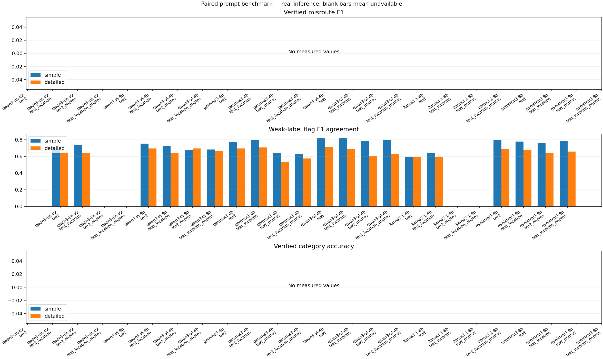
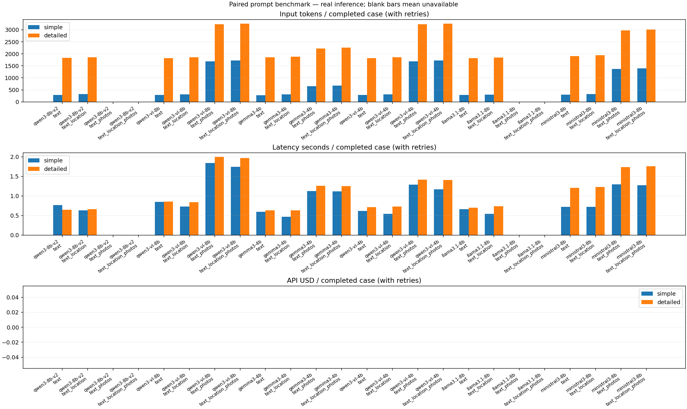
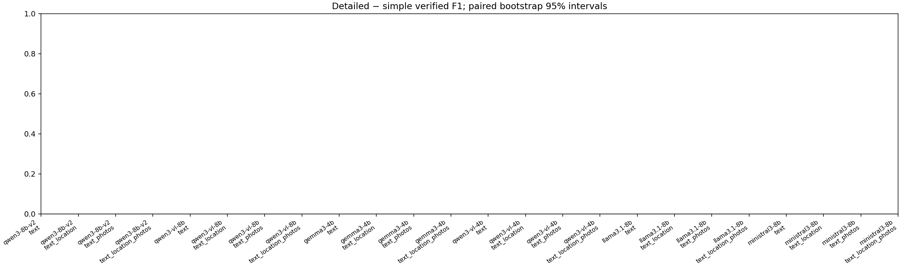
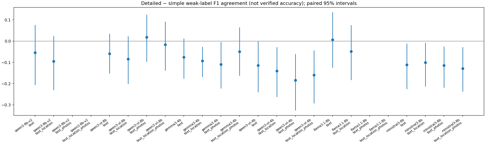

Saved predictions: 3,999 completed, 1 failed, 800 skipped, 0 pending.
Download: Performance CSV · Prompt comparisons · Modality comparisons · Model comparisons · Photo availability strata · False positives · Predictions · Report JSON · Raw requests and responses (SQLite)
CURRENT_TYPE and misroute labels are hidden from inference and joined only for scoring by case ID plus input hash. Proxy labels and exported description/location/photo timing remain unverified. Differences are detailed minus simple on identical completed cases only. Null denotes unavailable/undefined; unknown cost is never reported as zero. Accuracy includes category abstentions as incorrect. Positive flag abstentions count as false negatives. Original/current agreement uses explicit reference aliases; unmapped workflow names stay unmapped. Raw outputs and resource totals include failed/retried attempts. Latency is per-request wall time including retries, excluding queue wait. Cost is API token cost only, excluding hardware/energy; cloud token-rate estimates are not invoices. Mock tokens/timings are synthetic plumbing evidence. Flag accuracy counts all abstentions as incorrect; F1 alone does not penalize negative-case abstentions. Inspect coverage and abstentions together. Image cases sent counts actual nonempty image inputs. Linked-photo counts describe dataset availability, including text-only configurations. Intervals are paired case bootstrap percentiles, descriptive and unadjusted for multiple comparisons. Tradeoff decisions use configured thresholds on paired verified F1; inspect category accuracy, completeness and all modality/model rows before choosing a winner.
Tradeoff policy: {"bootstrap_iterations":1000,"max_extra_cost_usd":0.01,"max_extra_latency_seconds":10.0,"max_extra_tokens":10000,"min_f1_gain":0.01,"min_verified":30,"primary_metric":"verified_f1"}
| model | adapter | modality | variant | planned | completed | failed | skipped | pending | verified_flag_n | verified_f1 | weak_f1 | verified_category_n | verified_category_accuracy | weak_precision | weak_recall | weak_fp | weak_flag_accuracy | original_agreement | current_agreement | image_cases_sent_n | flag_abstention_rate | category_abstention_rate | mean_input_tokens | mean_output_tokens | mean_latency_seconds | mean_cost_usd |
|---|---|---|---|---|---|---|---|---|---|---|---|---|---|---|---|---|---|---|---|---|---|---|---|---|---|---|
| qwen3-8b-v2 | ollama | text | simple | 100 | 100 | 0 | 0 | 0 | 0 | — | 0.6933 | 0 | — | 0.9286 | 0.5532 | 2 | 0.77 | 0.61 | 0.72 | 0 | 0 | 0 | 293.3 | 55.11 | 0.7649 | 0 |
| qwen3-8b-v2 | ollama | text | detailed | 100 | 100 | 0 | 0 | 0 | 0 | — | 0.6389 | 0 | — | 0.92 | 0.4894 | 2 | 0.74 | 0.53 | 0.82 | 0 | 0 | 0 | 1830 | 58.29 | 0.6441 | 0 |
| qwen3-8b-v2 | ollama | text_location | simple | 100 | 100 | 0 | 0 | 0 | 0 | — | 0.7342 | 0 | — | 0.9062 | 0.617 | 3 | 0.79 | 0.58 | 0.74 | 0 | 0 | 0 | 323.7 | 56.33 | 0.63 | 0 |
| qwen3-8b-v2 | ollama | text_location | detailed | 100 | 100 | 0 | 0 | 0 | 0 | — | 0.6389 | 0 | — | 0.92 | 0.4894 | 2 | 0.74 | 0.53 | 0.81 | 0 | 0 | 0 | 1861 | 60.2 | 0.6623 | 0 |
| qwen3-8b-v2 | ollama | text_photos | simple | 100 | 0 | 0 | 100 | 0 | 0 | — | — | 0 | — | — | — | 0 | — | — | — | 0 | — | — | — | — | — | — |
| qwen3-8b-v2 | ollama | text_photos | detailed | 100 | 0 | 0 | 100 | 0 | 0 | — | — | 0 | — | — | — | 0 | — | — | — | 0 | — | — | — | — | — | — |
| qwen3-8b-v2 | ollama | text_location_photos | simple | 100 | 0 | 0 | 100 | 0 | 0 | — | — | 0 | — | — | — | 0 | — | — | — | 0 | — | — | — | — | — | — |
| qwen3-8b-v2 | ollama | text_location_photos | detailed | 100 | 0 | 0 | 100 | 0 | 0 | — | — | 0 | — | — | — | 0 | — | — | — | 0 | — | — | — | — | — | — |
| qwen3-vl-8b | ollama | text | simple | 100 | 100 | 0 | 0 | 0 | 0 | — | 0.7529 | 0 | — | 0.8421 | 0.6809 | 6 | 0.79 | 0.6 | 0.72 | 0 | 0 | 0 | 285.3 | 66.98 | 0.8486 | 0 |
| qwen3-vl-8b | ollama | text | detailed | 100 | 100 | 0 | 0 | 0 | 0 | — | 0.6933 | 0 | — | 0.9286 | 0.5532 | 2 | 0.77 | 0.59 | 0.83 | 0 | 0 | 0 | 1822 | 78.69 | 0.858 | 0 |
| qwen3-vl-8b | ollama | text_location | simple | 100 | 100 | 0 | 0 | 0 | 0 | — | 0.7229 | 0 | — | 0.8333 | 0.6383 | 6 | 0.77 | 0.63 | 0.71 | 0 | 0 | 0 | 315.7 | 68.21 | 0.7293 | 0 |
| qwen3-vl-8b | ollama | text_location | detailed | 100 | 100 | 0 | 0 | 0 | 0 | — | 0.6389 | 0 | — | 0.92 | 0.4894 | 2 | 0.74 | 0.59 | 0.82 | 0 | 0 | 0 | 1853 | 78.29 | 0.8388 | 0 |
| qwen3-vl-8b | ollama | text_photos | simple | 100 | 100 | 0 | 0 | 0 | 0 | — | 0.6753 | 0 | — | 0.8667 | 0.5532 | 4 | 0.75 | 0.66 | 0.69 | 85 | 0 | 0 | 1691 | 69.35 | 1.843 | 0 |
| qwen3-vl-8b | ollama | text_photos | detailed | 100 | 100 | 0 | 0 | 0 | 0 | — | 0.6933 | 0 | — | 0.9286 | 0.5532 | 2 | 0.77 | 0.55 | 0.74 | 85 | 0 | 0 | 3228 | 79.49 | 1.999 | 0 |
| qwen3-vl-8b | ollama | text_location_photos | simple | 100 | 100 | 0 | 0 | 0 | 0 | — | 0.6835 | 0 | — | 0.8438 | 0.5745 | 5 | 0.75 | 0.64 | 0.7 | 85 | 0 | 0 | 1722 | 68.99 | 1.741 | 0 |
| qwen3-vl-8b | ollama | text_location_photos | detailed | 100 | 100 | 0 | 0 | 0 | 0 | — | 0.6667 | 0 | — | 0.96 | 0.5106 | 1 | 0.76 | 0.57 | 0.74 | 85 | 0 | 0 | 3258 | 80.89 | 1.967 | 0 |
| gemma3-4b | ollama | text | simple | 100 | 100 | 0 | 0 | 0 | 0 | — | 0.7706 | 0 | — | 0.6774 | 0.8936 | 20 | 0.75 | 0.54 | 0.71 | 0 | 0 | 0 | 277.7 | 44.66 | 0.5921 | 0 |
| gemma3-4b | ollama | text | detailed | 100 | 100 | 0 | 0 | 0 | 0 | — | 0.6947 | 0 | — | 0.6875 | 0.7021 | 15 | 0.69 | 0.6 | 0.83 | 0 | 0.04 | 0 | 1853 | 60.4 | 0.6307 | 0 |
| gemma3-4b | ollama | text_location | simple | 100 | 100 | 0 | 0 | 0 | 0 | — | 0.8 | 0 | — | 0.7241 | 0.8936 | 16 | 0.79 | 0.55 | 0.71 | 0 | 0 | 0 | 309.1 | 45.12 | 0.4698 | 0 |
| gemma3-4b | ollama | text_location | detailed | 100 | 100 | 0 | 0 | 0 | 0 | — | 0.7071 | 0 | — | 0.6731 | 0.7447 | 17 | 0.67 | 0.65 | 0.76 | 0 | 0.06 | 0 | 1884 | 63.4 | 0.6312 | 0 |
| gemma3-4b | ollama | text_photos | simple | 100 | 100 | 0 | 0 | 0 | 0 | — | 0.6372 | 0 | — | 0.5455 | 0.766 | 30 | 0.59 | 0.59 | 0.67 | 85 | 0 | 0 | 649.8 | 47.56 | 1.128 | 0 |
| gemma3-4b | ollama | text_photos | detailed | 100 | 100 | 0 | 0 | 0 | 0 | — | 0.5273 | 0 | — | 0.4603 | 0.617 | 34 | 0.47 | 0.7 | 0.7 | 85 | 0.03 | 0 | 2225 | 69.53 | 1.26 | 0 |
| gemma3-4b | ollama | text_location_photos | simple | 100 | 100 | 0 | 0 | 0 | 0 | — | 0.6239 | 0 | — | 0.5484 | 0.7234 | 28 | 0.59 | 0.62 | 0.67 | 85 | 0 | 0 | 681.1 | 46.6 | 1.114 | 0 |
| gemma3-4b | ollama | text_location_photos | detailed | 100 | 100 | 0 | 0 | 0 | 0 | — | 0.5741 | 0 | — | 0.5082 | 0.6596 | 30 | 0.53 | 0.72 | 0.7 | 85 | 0.03 | 0 | 2256 | 69.77 | 1.253 | 0 |
| qwen3-vl-4b | ollama | text | simple | 100 | 100 | 0 | 0 | 0 | 0 | — | 0.8235 | 0 | — | 0.7636 | 0.8936 | 13 | 0.82 | 0.52 | 0.71 | 0 | 0 | 0 | 285.3 | 70.93 | 0.6206 | 0 |
| qwen3-vl-4b | ollama | text | detailed | 100 | 100 | 0 | 0 | 0 | 0 | — | 0.7089 | 0 | — | 0.875 | 0.5957 | 4 | 0.77 | 0.51 | 0.81 | 0 | 0.04 | 0 | 1822 | 94.92 | 0.717 | 0 |
| qwen3-vl-4b | ollama | text_location | simple | 100 | 100 | 0 | 0 | 0 | 0 | — | 0.8247 | 0 | — | 0.8 | 0.8511 | 10 | 0.83 | 0.52 | 0.72 | 0 | 0 | 0 | 315.7 | 73.39 | 0.5428 | 0 |
| qwen3-vl-4b | ollama | text_location | detailed | 100 | 100 | 0 | 0 | 0 | 0 | — | 0.6842 | 0 | — | 0.8966 | 0.5532 | 3 | 0.76 | 0.5 | 0.8 | 0 | 0.07 | 0 | 1853 | 96.41 | 0.7286 | 0 |
| qwen3-vl-4b | ollama | text_photos | simple | 100 | 100 | 0 | 0 | 0 | 0 | — | 0.7872 | 0 | — | 0.7872 | 0.7872 | 10 | 0.8 | 0.54 | 0.71 | 85 | 0 | 0 | 1691 | 74.84 | 1.292 | 0 |
| qwen3-vl-4b | ollama | text_photos | detailed | 100 | 100 | 0 | 0 | 0 | 0 | — | 0.6027 | 0 | — | 0.8462 | 0.4681 | 4 | 0.71 | 0.52 | 0.77 | 85 | 0.04 | 0 | 3228 | 96.48 | 1.414 | 0 |
| qwen3-vl-4b | ollama | text_location_photos | simple | 100 | 99 | 1 | 0 | 0 | 0 | — | 0.7917 | 0 | — | 0.7755 | 0.8085 | 11 | 0.798 | 0.5253 | 0.7273 | 84 | 0 | 0 | 1725 | 75.57 | 1.173 | 0 |
| qwen3-vl-4b | ollama | text_location_photos | detailed | 100 | 100 | 0 | 0 | 0 | 0 | — | 0.6234 | 0 | — | 0.8 | 0.5106 | 6 | 0.71 | 0.48 | 0.79 | 85 | 0.05 | 0 | 3258 | 98.48 | 1.408 | 0 |
| llama3.1-8b | ollama | text | simple | 100 | 100 | 0 | 0 | 0 | 0 | — | 0.5893 | 0 | — | 0.5077 | 0.7021 | 32 | 0.5 | 0.45 | 0.66 | 0 | 0.14 | 0 | 286.7 | 53.32 | 0.6615 | 0 |
| llama3.1-8b | ollama | text | detailed | 100 | 100 | 0 | 0 | 0 | 0 | — | 0.5957 | 0 | — | 0.5957 | 0.5957 | 19 | 0.58 | 0.48 | 0.75 | 0 | 0.1 | 0.01 | 1824 | 69.11 | 0.6978 | 0 |
| llama3.1-8b | ollama | text_location | simple | 100 | 100 | 0 | 0 | 0 | 0 | — | 0.6408 | 0 | — | 0.5893 | 0.7021 | 23 | 0.46 | 0.44 | 0.64 | 0 | 0.28 | 0 | 304.7 | 52.98 | 0.5435 | 0 |
| llama3.1-8b | ollama | text_location | detailed | 100 | 100 | 0 | 0 | 0 | 0 | — | 0.5918 | 0 | — | 0.5686 | 0.617 | 22 | 0.55 | 0.49 | 0.77 | 0 | 0.1 | 0.01 | 1842 | 73.28 | 0.7348 | 0 |
| llama3.1-8b | ollama | text_photos | simple | 100 | 0 | 0 | 100 | 0 | 0 | — | — | 0 | — | — | — | 0 | — | — | — | 0 | — | — | — | — | — | — |
| llama3.1-8b | ollama | text_photos | detailed | 100 | 0 | 0 | 100 | 0 | 0 | — | — | 0 | — | — | — | 0 | — | — | — | 0 | — | — | — | — | — | — |
| llama3.1-8b | ollama | text_location_photos | simple | 100 | 0 | 0 | 100 | 0 | 0 | — | — | 0 | — | — | — | 0 | — | — | — | 0 | — | — | — | — | — | — |
| llama3.1-8b | ollama | text_location_photos | detailed | 100 | 0 | 0 | 100 | 0 | 0 | — | — | 0 | — | — | — | 0 | — | — | — | 0 | — | — | — | — | — | — |
| ministral3-8b | ollama | text | simple | 100 | 100 | 0 | 0 | 0 | 0 | — | 0.7955 | 0 | — | 0.8537 | 0.7447 | 6 | 0.82 | 0.51 | 0.74 | 0 | 0 | 0.02 | 297.6 | 53.04 | 0.7214 | 0 |
| ministral3-8b | ollama | text | detailed | 100 | 100 | 0 | 0 | 0 | 0 | — | 0.6842 | 0 | — | 0.8966 | 0.5532 | 3 | 0.74 | 0.5 | 0.78 | 0 | 0.09 | 0.09 | 1911 | 105.5 | 1.208 | 0 |
| ministral3-8b | ollama | text_location | simple | 100 | 100 | 0 | 0 | 0 | 0 | — | 0.7765 | 0 | — | 0.8684 | 0.7021 | 5 | 0.81 | 0.45 | 0.69 | 0 | 0 | 0.05 | 331 | 63.14 | 0.7209 | 0 |
| ministral3-8b | ollama | text_location | detailed | 100 | 100 | 0 | 0 | 0 | 0 | — | 0.6757 | 0 | — | 0.9259 | 0.5319 | 2 | 0.74 | 0.49 | 0.76 | 0 | 0.09 | 0.08 | 1944 | 108.5 | 1.231 | 0 |
| ministral3-8b | ollama | text_photos | simple | 100 | 100 | 0 | 0 | 0 | 0 | — | 0.7556 | 0 | — | 0.7907 | 0.7234 | 9 | 0.78 | 0.52 | 0.72 | 85 | 0 | 0 | 1366 | 62.88 | 1.297 | 0 |
| ministral3-8b | ollama | text_photos | detailed | 100 | 100 | 0 | 0 | 0 | 0 | — | 0.641 | 0 | — | 0.8065 | 0.5319 | 6 | 0.72 | 0.49 | 0.75 | 85 | 0.05 | 0.02 | 2979 | 99.26 | 1.733 | 0 |
| ministral3-8b | ollama | text_location_photos | simple | 100 | 100 | 0 | 0 | 0 | 0 | — | 0.7872 | 0 | — | 0.7872 | 0.7872 | 10 | 0.8 | 0.47 | 0.7 | 85 | 0 | 0.04 | 1400 | 63.72 | 1.277 | 0 |
| ministral3-8b | ollama | text_location_photos | detailed | 100 | 100 | 0 | 0 | 0 | 0 | — | 0.6579 | 0 | — | 0.8621 | 0.5319 | 4 | 0.74 | 0.49 | 0.74 | 85 | 0.03 | 0.03 | 3013 | 101.3 | 1.759 | 0 |
| model | modality | paired_n | verified_flag_n | delta_weak_f1 | delta_weak_f1_ci_low | delta_weak_f1_ci_high | delta_verified_f1 | delta_verified_f1_ci_low | delta_verified_f1_ci_high | delta_verified_category_accuracy | delta_mean_total_tokens | delta_mean_latency_seconds | delta_mean_cost_usd | tradeoff_assessment |
|---|---|---|---|---|---|---|---|---|---|---|---|---|---|---|
| qwen3-8b-v2 | text | 100 | 0 | -0.05444 | -0.2063 | 0.07624 | — | — | — | — | 1540 | -0.1208 | 0 | insufficient_independent_verification |
| qwen3-8b-v2 | text_location | 100 | 0 | -0.09529 | -0.2301 | 0.02439 | — | — | — | — | 1541 | 0.03229 | 0 | insufficient_independent_verification |
| qwen3-8b-v2 | text_photos | 0 | 0 | — | — | — | — | — | — | — | — | — | — | incomplete_paired_experiment |
| qwen3-8b-v2 | text_location_photos | 0 | 0 | — | — | — | — | — | — | — | — | — | — | incomplete_paired_experiment |
| qwen3-vl-8b | text | 100 | 0 | -0.05961 | -0.1521 | 0.03463 | — | — | — | — | 1549 | 0.009412 | 0 | insufficient_independent_verification |
| qwen3-vl-8b | text_location | 100 | 0 | -0.084 | -0.2019 | 0.02258 | — | — | — | — | 1547 | 0.1095 | 0 | insufficient_independent_verification |
| qwen3-vl-8b | text_photos | 100 | 0 | 0.01801 | -0.09703 | 0.125 | — | — | — | — | 1547 | 0.1562 | 0 | insufficient_independent_verification |
| qwen3-vl-8b | text_location_photos | 100 | 0 | -0.01688 | -0.1386 | 0.09195 | — | — | — | — | 1549 | 0.2261 | 0 | insufficient_independent_verification |
| gemma3-4b | text | 100 | 0 | -0.07591 | -0.1763 | 0.0127 | — | — | — | — | 1591 | 0.03857 | 0 | insufficient_independent_verification |
| gemma3-4b | text_location | 100 | 0 | -0.09293 | -0.1684 | -0.02741 | — | — | — | — | 1593 | 0.1614 | 0 | insufficient_independent_verification |
| gemma3-4b | text_photos | 100 | 0 | -0.1099 | -0.2225 | -0.00463 | — | — | — | — | 1597 | 0.1317 | 0 | insufficient_independent_verification |
| gemma3-4b | text_location_photos | 100 | 0 | -0.04978 | -0.1633 | 0.06499 | — | — | — | — | 1598 | 0.1391 | 0 | insufficient_independent_verification |
| qwen3-vl-4b | text | 100 | 0 | -0.1147 | -0.2398 | -0.001307 | — | — | — | — | 1561 | 0.09632 | 0 | insufficient_independent_verification |
| qwen3-vl-4b | text_location | 100 | 0 | -0.1405 | -0.2626 | -0.02828 | — | — | — | — | 1560 | 0.1858 | 0 | insufficient_independent_verification |
| qwen3-vl-4b | text_photos | 100 | 0 | -0.1845 | -0.3265 | -0.06 | — | — | — | — | 1559 | 0.1223 | 0 | insufficient_independent_verification |
| qwen3-vl-4b | text_location_photos | 99 | 0 | -0.1601 | -0.2921 | -0.04428 | — | — | — | — | 1560 | 0.2386 | 0 | incomplete_paired_experiment |
| llama3.1-8b | text | 100 | 0 | 0.006459 | -0.1248 | 0.1358 | — | — | — | — | 1553 | 0.03628 | 0 | insufficient_independent_verification |
| llama3.1-8b | text_location | 100 | 0 | -0.04894 | -0.1836 | 0.07482 | — | — | — | — | 1557 | 0.1913 | 0 | insufficient_independent_verification |
| llama3.1-8b | text_photos | 0 | 0 | — | — | — | — | — | — | — | — | — | — | incomplete_paired_experiment |
| llama3.1-8b | text_location_photos | 0 | 0 | — | — | — | — | — | — | — | — | — | — | incomplete_paired_experiment |
| ministral3-8b | text | 100 | 0 | -0.1112 | -0.226 | -0.0121 | — | — | — | — | 1666 | 0.4863 | 0 | insufficient_independent_verification |
| ministral3-8b | text_location | 100 | 0 | -0.1008 | -0.2129 | -0.007869 | — | — | — | — | 1658 | 0.5102 | 0 | insufficient_independent_verification |
| ministral3-8b | text_photos | 100 | 0 | -0.1145 | -0.2186 | -0.02527 | — | — | — | — | 1649 | 0.436 | 0 | insufficient_independent_verification |
| ministral3-8b | text_location_photos | 100 | 0 | -0.1293 | -0.237 | -0.02863 | — | — | — | — | 1651 | 0.4819 | 0 | insufficient_independent_verification |




Full precision/recall/F1, agreement, false positives and batch summaries are in the accompanying CSV and JSON files. Exact raw requests/responses remain in the checkpoint SQLite database and any supplied raw JSONL export.